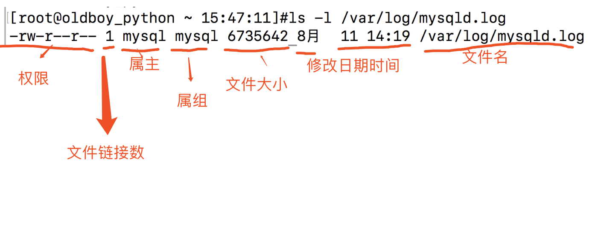

ip相关
- ifconfig :查询,设置网卡和ip等参数
- eth0 网卡的代号
- lo 回环地址loopback
- inet IPv4的Ip地址
- netmask 子网掩码
- broadcast 广播地址
- RX/TX 流量发/收情况 tx是发送（transport），rx是接收(receive)
- packets 数据包数
- errors 数据包错误数
- dropped 数据包有问题被丢弃的数量
- collisions 数据包碰撞情况，数值太多代表网络状况差
- ifup,ifdown 脚本命令,更简单的方式启动关闭网络
- ipup + 网卡名
- ipdown + 网卡名
- # 编辑网卡配置文件 vim /etc/sysconfig/network-scripts/ifcfg-eth0
- # 修改配置参数 ONBOOT=yes
查看版本信息
- cat /etc/redhat-release :查看版本信息
- uname -r 查看内核版本号
- uname -m 查看系统多少位
- uname -a 查看内核全部信息
用户管理和文件权限
- 用户管理
- 添加用户
- useradd 用户名 :添加用户
- passwd 用户名: 增加密码
- 切换用户
- su - 用户名
- su命令中间的-号很重要，意味着完全切换到新的用户，即环境变量信息也变更为新用户的信息
- 查看当前用户
- whoami
- 退出用户
- logout
- ctrl + d
- 创建用户组
- grpupadd 组名
- 删除用户
- -f 强制删除用户
- -r 同事删除用户以及家目录
- userdel -r 用户名
- sudo命令
- 语法
- sudo 【选项】【参数】
- -b：在后台执行指令；
- -h：显示帮助；
- -H：将HOME环境变量设为新身份的HOME环境变量；
- -k：结束密码的有效期限，也就是下次再执行sudo时便需要输入密码；。
- -l：列出目前用户可执行与无法执行的指令；
- -p：改变询问密码的提示符号；
- -s
：执行指定的shell； - -u<用户>：以指定的用户作为新的身份。若不加上此参数，则预设以root作为新的身份；
- -v：延长密码有效期限5分钟；
- -V ：显示版本信息。
- 编辑/etc/sudoers文件,写入 用户名 ALL=(ALL) ALL # 允许chaoge在任何地方，执行任何命令
- 语法
- 添加用户
文件权限
-
图片
-

-
-
文件类型
- - 一般文件
- d 文件夹
- l 软连接（快捷方式）
- b 块设备，存储媒体文件为主
- c 代表键盘,鼠标等设备
-
文件权限
- r read可读
- w write写入，编辑
- x executable 可以执行
-
查看用户权限命令
- id 用户名
-
需改权限属性
- 修改属主
- chown 属主名 文件名
- 修改属组
- chgrp 属组名 文件名
- 文件权限
- r ---- > 4
- w ------> 2
- x ------->1
- 修改权限命令
- chmod [身份] [参数] [文件]
- u(user) +(添加)
- g(group) -(减去)
- o(other) =(赋值)
- a(all)
- 修改属主
软连接
- ln -s 目标文件 软连接名
PS1变量
- inux命令提示符由PS1环境变量控制
- 参数
- 可以自行调整全局变量/etc/profile文件用于永久生效 PS1='[\u@\h \W\t]\$'
- \d 日期
- \H 完整主机名
- \h 主机名第一个名字
- \t 时间24小时制HHMMSS\T 时间12小时制
- \A 时间24小时制HHMM
- \u 当前用户账号名
- \v BASH的版本\w 完整工作目录
- \W 利用basename取得工作目录名
- # 下达的第几个命令
- \$ 提示字符，root为#，普通用户为$
- PS1 > 变量名
- $PS1 > 查看变量内容
- PS1=新内容 重新赋值
- 参数
- 在/etc/profile下增加 export PS1=[你要显示的格式,可永久修改]
tar解压命令
- 语法
- tar(选项)(参数)
- -A或--catenate：新增文件到以存在的备份文件；
- -B：设置区块大小；
- -c或--create：建立新的备份文件；
- -C <目录>：这个选项用在解压缩，若要在特定目录解压缩，可以使用这个选项。
- -d：记录文件的差别；
- -x或--extract或--get：从备份文件中还原文件；
- -t或--list：列出备份文件的内容；
- -z或--gzip或--ungzip：通过gzip指令处理备份文件；
- -Z或--compress或--uncompress：通过compress指令处理备份文件；
- -f<备份文件>或--file=<备份文件>：指定备份文件；
- -v或--verbose：显示指令执行过程；
- -r：添加文件到已经压缩的文件；
- -u：添加改变了和现有的文件到已经存在的压缩文件；
- -j：支持bzip2解压文件；
- -v：显示操作过程；
- -l：文件系统边界设置；
- -k：保留原有文件不覆盖；
- -m：保留文件不被覆盖；
- -w：确认压缩文件的正确性；
- -p或--same-permissions：用原来的文件权限还原文件；
- -P或--absolute-names：文件名使用绝对名称，不移除文件名称前的“/”号；
- -N <日期格式> 或 --newer=<日期时间>：只将较指定日期更新的文件保存到备份文件里；
- --exclude=<范本样式>：排除符合范本样式的文件。
- 实例
- tar -zxvf Python-3.7.0b3.tgz #解压
- tar -czvf oldboy.txt.tar.gz oldboy.txt #压缩oldboy.txt
- 上述命令等于 tar -cvf oldboy.tar oldboy.txt
- gzip oldboy.tar
- tar -cf all_pic.tar *.jpg #压缩当前目录所有jpg结尾的文件
- tar -xjf xx.tar.bz2 #解压缩bz2结尾的文件
gzip命令(压缩)
- 语法
- -d或--decompress或----uncompress：解开压缩文件；
- -f或——force：强行压缩文件。
- -h或——help：在线帮助；
- -l或——list：列出压缩文件的相关信息；
- -L或——license：显示版本与版权信息；
- -r或——recursive：递归处理，将指定目录下的所有文件及子目录一并处理；
- -v或——verbose：显示指令执行过程；
- 实例
- 压缩当前目录所有文件为.gz文件
- gzip *
- 把上例中每个压缩的文件解压，并列出详细的信息
- gzip -dv *
- 显示压缩文件的信息，并不解压
- gzip -l *
- 压缩一个tar备份文件，扩展名是tar.gz
- tar -cf my.tar my_first.py
- gzip -r my.tar
netstat命令
- netstat命令用来打印Linux中网络系统的状态信息，可让你得知整个Linux系统的网络情况。
- 语法:
- netstat [选项]
- -t或--tcp：显示TCP传输协议的连线状况；
- -u或--udp：显示UDP传输协议的连线状况；
- -n或--numeric：直接使用ip地址，而不通过域名服务器；
- -l或--listening：显示监控中的服务器的Socket；
- -p或--programs：显示正在使用Socket的程序识别码和程序名称；
- -a或--all：显示所有连线中的Socket；
ps命令
- ps 命令用于查看系统中的进程状态，格式为“ps [参数]”。
- 参数
- -a 显示所有进程
- -u 用户以及其他详细信息
- -x 显示没有控制终端的进程
Kill命令
- kill命令用来删除执行中的程序或工作。kill可将指定的信息送至程序。
- 选项
- -a：当处理当前进程时，不限制命令名和进程号的对应关系；
- -l <信息编号>：若不加<信息编号>选项，则-l参数会列出全部的信息名称；
- -p：指定kill 命令只打印相关进程的进程号，而不发送任何信号；
- -s <信息名称或编号>：指定要送出的信息；
- -u：指定用户。
- 9种信号
- HUP 1 终端断线
- INT 2 中断（同 Ctrl + C）
- QUIT 3 退出（同 Ctrl + \）
- TERM 15 终止
- KILL 9 强制终止
- CONT 18 继续（与STOP相反， fg/bg命令）
- STOP 19 暂停（同 Ctrl + Z）
- 实例
- 先用ps查找进程，然后用kill杀掉：
- ps -ef | grep vim
- root 3268 2884 0 16:21 pts/1 00:00:00 vim install.log
- root 3370 2822 0 16:21 pts/0 00:00:00 grep vim
- kill 3268
killall命令
- 通常来讲，复杂软件的服务程序会有多个进程协同为用户提供服务，如果逐个去结束这 些进程会比较麻烦，此时可以使用 killall 命令来批量结束某个服务程序带有的全部进程。
- 例子
- 例如nginx启动后有2个进程 killall nginx
SELinux功能
- 大多数ssh连接不上虚拟机，都是因为防火墙和selinux阻挡了
- 永久关闭
- 1.修改配置文件，永久生效关闭selinux
- cp /etc/selinux/config /etc/selinux/config.bak #修改前备份
- 2.修改方式可以vim编辑,找到
- # This file controls the state of SELinux on the system.
- # SELINUX= can take one of these three values:
- # enforcing - SELinux security policy is enforced.
- # permissive - SELinux prints warnings instead of enforcing.
- # disabled - No SELinux policy is loaded.
- SELINUX=disabled
- 3.用sed替换
- sed -i 's/SELINUX=enforcing/SELINUX=disabled/' /etc/selinux/config
- 4.检查状态
- grep "SELINUX=disabled" /etc/selinux/config
- #出现结果即表示修改成功
- 临时关闭selinux(命令行修改，重启失效)：
- getenforce #获取selinux状态
- #修改selinux状态
- setenforce
- usage: setenforce [ Enforcing | Permissive | 1 | 0 ]
- 数字0 表示permissive，给出警告，不会阻止，等同disabled
- 数字1表示enforcing，表示开启
iptables防火墙
- centos7默认已经使用firewall作为防火墙了
- 1.关闭防火墙
- systemctl status firewalld #查看防火墙状态
- systemctl stop firewalld #关闭防火墙
- systemctl disable firewalld#关闭防火墙开机启动
- systemctl is-enabled firewalld.service#检查防火墙是否启动
linux中文显示
- 1.修改配置文件/etc/locale.conf
- LANG="zh_CN.UTF-8"
- 2.更改后查看系统语言变量:locale
df 命令
- 语法:
- -h或--human-readable：以可读性较高的方式来显示信息；
- -k或--kilobytes：指定区块大小为1024字节；
- -T或--print-type：显示文件系统的类型；
- --help：显示帮助；
- --version：显示版本信息
tree
- tree命令以树状图列出目录的内容。
- -a：显示所有文件和目录；
- -A：使用ASNI绘图字符显示树状图而非以ASCII字符组合；
- -C：在文件和目录清单加上色彩，便于区分各种类型；
- -d：先是目录名称而非内容；
- -D：列出文件或目录的更改时间；
- -f：在每个文件或目录之前，显示完整的相对路径名称；
- -F：在执行文件，目录，Socket，符号连接，管道名称名称，各自加上"*"，"/"，"@"，"|"号；
- -g：列出文件或目录的所属群组名称，没有对应的名称时，则显示群组识别码；
- -i：不以阶梯状列出文件和目录名称；
- -l：<范本样式> 不显示符号范本样式的文件或目录名称；
- -l：如遇到性质为符号连接的目录，直接列出该连接所指向的原始目录；
- -n：不在文件和目录清单加上色彩；
- -N：直接列出文件和目录名称，包括控制字符；
- -p：列出权限标示；
- -P：<范本样式> 只显示符合范本样式的文件和目录名称；
- -q：用“？”号取代控制字符，列出文件和目录名称；
- -s：列出文件和目录大小；
- -t：用文件和目录的更改时间排序；
- -u：列出文件或目录的拥有者名称，没有对应的名称时，则显示用户识别码；
- -x：将范围局限在现行的文件系统中，若指定目录下的某些子目录，其存放于另一个文件系统上，则将该目录予以排除在寻找范围外。
- tree参数
DNS配置
- 配置文件
- cat /etc/resolv.conf#dns
- 服务器地址
- nameserver 223.5.5.5
- nameserver 119.29.29.29
- nslookup命令
- nslookup命令是常用域名查询工具，就是查DNS信息用的命令。
- 例子:nslookup www.oldboyedu.com
计划任务crond服务
- 语法
- -e：编辑该用户的计时器设置；
- -l：列出该用户的计时器设置；
- -r：删除该用户的计时器设置；
- -u<用户名称>：指定要设定计时器的用户名称。
- 格式
- 分钟(0-59) 小时(0-23) 日期(1-31) 月份(1-12) 星期(0-6,0代表星期天) 命令
- 软件包管理
- yum命令
- 参数
- yum(选项)(参数)
- -h：显示帮助信息；
- -y：对所有的提问都回答“yes”；
- -c：指定配置文件；
- -q：安静模式；
- -v：详细模式；
- -d：设置调试等级（0-10）；
- -e：设置错误等级（0-10）；
- -R：设置yum处理一个命令的最大等待时间；
- -C：完全从缓存中运行，而不去下载或者更新任何头文件。
- 参数
- yum源配置
- yum的目录
- cd /etc/yum.repos.d/
-
- https://opsx.alibaba.com/mirror 找到这个网站，然后找到centos7的帮助有第一和第二步操作
- 3.清空yum缓存并且生成新的yum缓存
- yum clean all
- yum makecache
- 4.安装软件扩展源
- yum install -y epel-release
- yum命令
- yum repolist all 列出所有仓库
- yum list all 列出仓库所有软件包
- yum info 软件包名 查看软件包信息
- yum install 软件包名 安装软件包
- yum reinstall 软件包名 重新安装软件包
- yum update 软件包名 升级软件包
- yum remove 软件包名 移除软件包
- yum clean all 清楚所有仓库缓存
- yum check-update 检查可以更新的软件包
- yum grouplist 查看系统中已安装的软件包
- yum groupinstall 软件包组 安装软件包组
- yum的目录
- yum命令
/etc下的linux目录知识
- /etc：
- 这个目录用来存放所有的系统管理所需要的配置文件和子目录。
- # 网卡配置文件
- /etc/sysconfig/network-script/ifcfg-eth0
- # 修改机器名以及网卡，网管等配置
- /etc/sysconfig/network
- # linux的dns客户端配置文件，实现域名和ip的互相解析
- /etc/resolv.conf
- # 本地dns解析文件,设定ip和域名的对应解析,开发测试最常用的临时域名解析
- /etc/hosts/
- # 系统全局环境变量永久生效的配置文件,如PATH等
- /etc/profile
- # 用户的环境变量
- ~/.bash_profile
- ~/.bashrc
- # 存放可执行程序的目录，大多是系统管理命令
- /usr/sbin
- # 存放用户自编译安装软件的目录 > 等同于C:\Program files （windows）
- /usr/local
- # 关于处理器的信息,还可以top指令查看
- /proc/cpuinfo
- # 查看内存信息，还可以free -m
- /proc/meminfo
- Linux下安装程序的方法
- rpm -ivh 包名.rpm 需要手动解决依赖关系
- yum install 包名 yum自动处理依赖关系
- 编译安装（源码安装）
安装Lrzsz
- #安装此软件，即可拖拽上传下载linux代码到windows
- yum install lrzsz
- sz
- rz